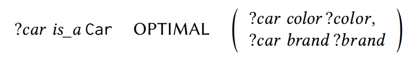
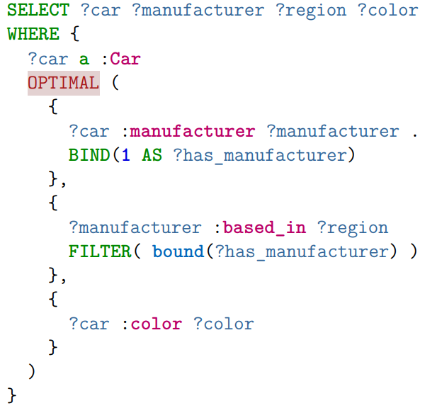
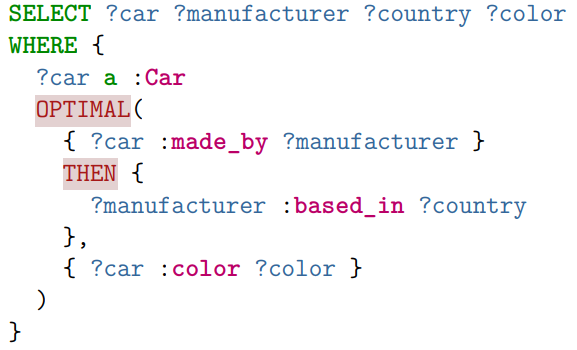

What is the problem?
Data heterogeneity
- Missing information
- Different representations
- Unintuitve modeling techniques
What solutions do we have?
Example
üßê I want a red cabriolet

Built-in Operators
- complex FILTER methods
üòµ I'm looking for a red car.
But I could swear there was something else I wanted to mention.
üôÖ I want a red cabriolet or no car at all!
ü§î I want a red car... Or maybe a cabriolet..?
ü§∑ I want a red car!
Also, can you tell me if it happens to be a cabriolet?
FILTER constraints
ü§Ø I can tell you exactly what I want!But first, let me read out your entire catalogue to you, and my thoughts on your products...
What do we have?
(with extensions)
Related work
- Previous knowledge from relational databases
- Fuzzy FILTER logic (f-SPARQL)
- Frameworks for value preferences (PrefSPARQL, SPREFQL)
What do we need?
Types of Preferences
- Value (properties)
- Structure (information)
ü§ù I prefer to know a price before I consider buying it
Ranking and Priority
- Equal importance
- Ranked importance
üí∞ Information on the price is more relevant than the color
Dependencies
- Independence
- Preferential Dependence
- Structural Dependence
üèÉ I only care about acceleration if it is a sports car
Expression complexity
- Simple intuitive modeling:
- Barely usable: The example from before
ü§∑ I need to understand what I am doing
Requirements
- Framework for structural dependencies
- Modeling of dependent and independent preferences
- Ranked and unranked preferences
- Simple intuitive modeling
What would that look like?
One simple operator

Left associative

Simultaneous
Well integrated
Is it actually usable?
Query Rewriting
ü§µ I want a car (), preferably with information on color (A) and brand (B).
Quantitative Criteria
- üìú Result Size
- üïú Response Time
üìú Result Size
- Smaller than OPTIONAL
- Greatly varying (between 0.02% and 100%)
- Heterogenous data -> bigger skyline result size
- Often homogenous or partially complete data
üïú Response Time
- Only up to 2 preferences
- Takes a lot longer
- Faster if much smaller
- Encodings perform similiar
- UNION more stable
What else is left to discuss?
Future Topics
- Complexity & expressive power
- In depth performance analysis
- Specialized evaluation runtimes
- Limitations of OPTIMAL
What limitations?
Limitations
- Semantic differences
- Dependency modeling
- Ranked alternatives
Dependency modeling
Better matching control
- Positive dependencies
- Negative dependencies
- n:m relations
THEN and OTHERWISE
Roundup
- Preferences offer intuitive modeling
- Structural preferences needed for handling incompleteness
- New operators for modeling queries
- Dependency modeling with adjustments